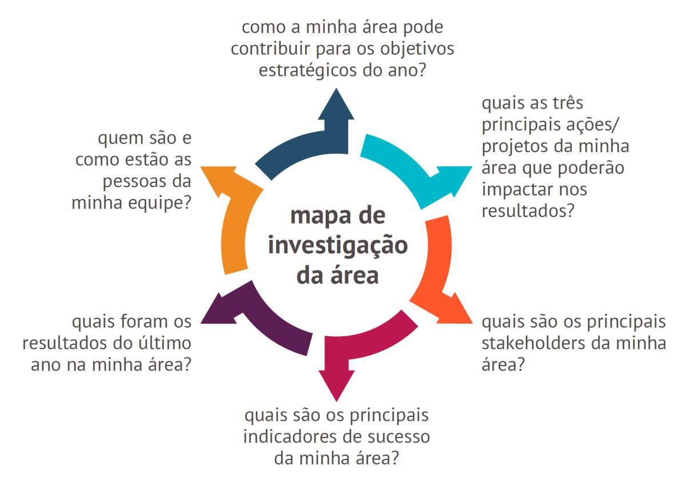

Mapa de investigação da área
Se você já fez a investigação do negócio agora é a vez de investigar a sua área. E, se não fez ainda, aproveite para fazer assim que terminar esta etapa. Assuma a postura de um investigador, veja o Mapa que preparamos e busque as respostas para as perguntas.
